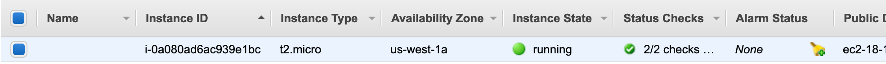
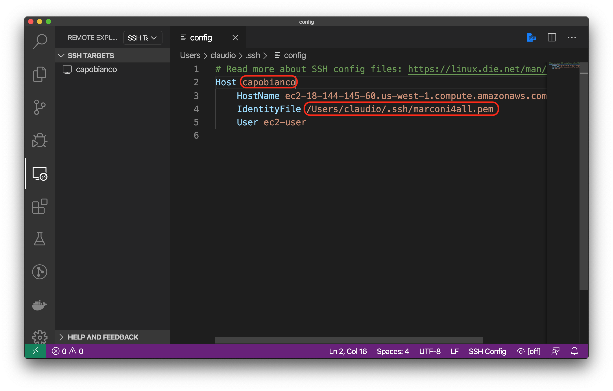
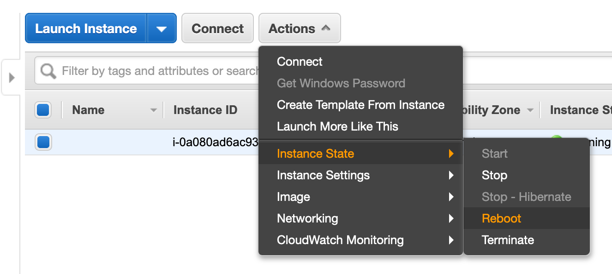
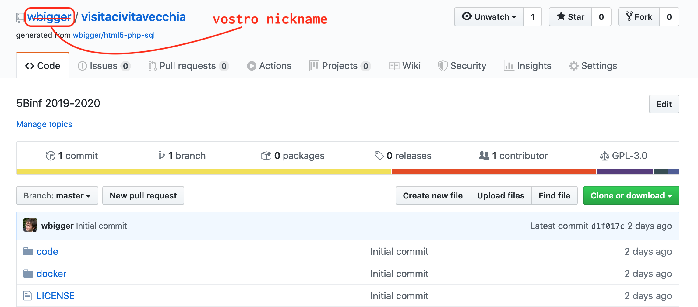
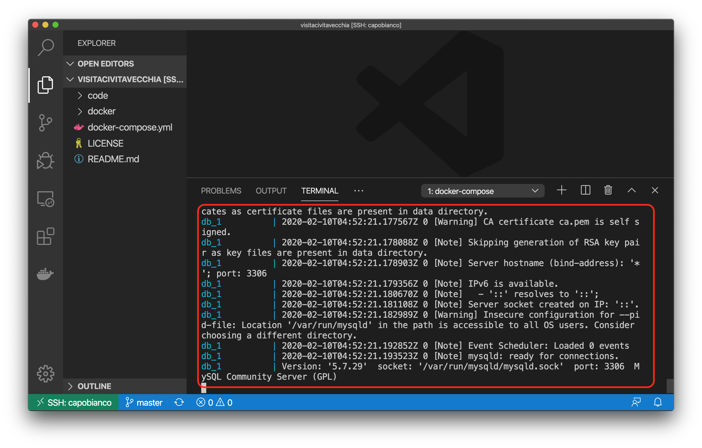

Sviluppo HTML5 e sistemi distribuiti
Istituto di Istruzione Superiore G. Marconi
Tecnologie Progettazione Sistemi Informatici
Benvenuti ragazzi!
Questo materiale riepiloga quanto detto a lezione negli scorsi giorni.
Le risposte alle domande dei compiti in classe sono tutte incluse in questo materiale.
I riferimenti al libro di testo sono tra parentesi quadre, come ad esempio [pag. 1].
Il testo in questi box sono per approfondimento. La lettura di questo materiale non è strettamente necessaria per le verifiche, ma è consigliata per vostra cultura personale e in quanto sapere indispensabile per chi vuole diventare un informatico.
Buon studio e buon lavoro.
Sistemi distribuiti
Premessa
In Informatica state imparando a programmare una singola macchina con vari linguaggi di programmazione (C++/Java,PHP) e a connettervi ad un database MySQL. Con Sistemi e Reti state imparando a configurare una rete di computer e connettervi in modo efficiente e sicuro ad un computer remoto.
Scopo di TPSI di quest'anno è la realizzazione di un servizio web, che quindi prevede la cooperazione di diverse tecnologie, linguaggi, macchine, dispositivi. Cercheremo di imparare cosa significa sistema distribuito e, soprattutto, come si realizza.
Sistemi monolitici e distribuiti
Immaginate di dover scrivere un documento di testo con Microsoft Word (versione classica). Accendo il computer, avvio l'applicazione, scrivo il mio documento, lo salvo e lo stampo. Nella redazione del mio documento, ci sono poche cose che possono andare storto: se il mio computer non ha particolari problemi dovrebbe andare tutto liscio. Se voglio inviarlo a qualcuno, lo salvo su una chiavetta o glielo invio per posta elettronica, Whatsapp o Telegram. Che succede però se il mio computer si rompe? Se non ho fatto backup recenti (cosa che succede regolarmente), rischio di perdere tutto o parte del lavoro. E se non ho il computer con me? Non posso lavorare sul mio file.
Ora immaginiamo di scrivere lo stesso documento con Google Docs. Accendo il computer, apro il browser, mi connetto ad internet, faccio l'accesso a Google, quindi apro Docs e comincio a scrivere. Se voglio condividere il file, posso inviare il link impostando adeguatamente i permessi di accesso. Se non ho il computer con me, posso usare un qualsiasi altro computer. Ci sono diverse cose che possono andare storto prima di riuscire a scrivere il documento: internet non funziona, mi sono dimenticato la password, etc. Però ho il mio file disponibile sempre e con una bassissima probabilità di perderlo.
Nel primo caso, ci troviamo davanti un'applicazione monolitica, o single tier: tutto risiede in una macchina. Nel secondo caso ho un'applicazione distribuita, o multi tiers: per fruire del servizio ho bisogno di più macchine (almeno due: la mia e il server di Google Docs).
Una definizione
Esistono varie definizioni, qui ne forniamo una:
"Un sistema distribuito consiste di un insieme di calcolatori autonomi, connessi fra loro tramite una rete e un middleware di distribuzione, che permette ai computer di coordinare le loro attività e di condividere le risorse del sistema, in modo che gli utenti percepiscano il sistema come un unico servizio integrato di calcolo." (Wolfgang Emmerich, 1997)
Nella definizione voglio sottolineare come, per funzionare, un sistema distribuito deve:
- prevedere più computer che si coordinano fra di loro
- usare risorse condivise
Architettura 3-tiers
L'architettura che ci interessa particolarmente è quella con 3 strati, chiamati tecnicamente in inglese "tiers".
- Client (es. browser, app nativa)
- Web server + application server (es. nginx/apache + PHP)
- Database (es. MySQL, MariaDB, Oracle)
Ci si può chiedere perché usare due macchine per i server, anziché una sola: ci sono vari motivi, ma principalmente perché:
- il database contiene dati riservati e deve essere più protetto, quindi meglio che stia dietro un'altro strato che fa da intermediario
- il database deve risiedere in delle macchine con dei requisiti di affidabilità e ridondanza molto elevati, quindi molto costose, ed è quindi più vantaggioso economicamente separarlo dal web/application server
Architettura 4-tiers
In molte situazioni può essere utile separare ulteriormente il web server e l'application server in due tier distinti, ottenendo la seguente architettura:
- client
- web server
- application server
- database
In questo modo ho una serie di vantaggi:
- posso cambiare la macchina dell'application server senza dover cambiare l'indirizzo IP pubblico del web server (e quindi il DNS)
- posso dirottare le richieste dei client a più di un application server, sia sia per bilanciamento del carico, sia per gestire richieste di tipo diverso
Architettura n-tiers
Posso ulteriormente separare l'application server in più tiers, in caso di necessità. Le web application più complesse possono essere composte anche da 6 o 7 tiers.
Ad esempio potrei avere una architettura come segue:
- client
- web server
- presentation tier: compone le pagine mettendo insieme parti provenienti da diverse macchine dello strato successivo
- business logic tier: il codice più significativo della web application
- data access tier: strato che permette un accesso omogeneo dei dati
- database: uno o più database che contengono effettivamente i dati
Alcune precisazioni importanti
Il termine tecnico "tier" sta ad indicare uno "strato" che può comunicare solo con quelli adiacenti e non con altri. Quindi un'architettura "client - server - database" è del tutto diversa da un'architettura "client - database - server" (che non avrebbe senso).
Si usa "tier" anziché "layer" per specificare che si usano macchine (fisiche o virtuali) diverse. Quindi un "layer" potrebbe essere qualcosa di puramente logico o concettuale, mentre "tier" deve essere legato ad una macchina specifica. Per semplificare, possiamo definire una "macchina" come un sistema di elaborazione che ha un proprio IP e comunica con gli i tiers adiacenti con protocolli di rete.
Da studiare
Cercare sul manuale per l'esame i sistemi distribuiti e studiare i relativi paragrafi.
HTML5
Il World Wide Web è nato nel 1989 sotto la guida del londinese Tim Burners-Lee: una rete di pagine di testo collegate tra di loro. La sintassi utilizzata per scrivere queste pagine è l'HTML, che trova una sua prima definizione standard nel 1991.
Nel 1994 Tim Burners-Lee fonda il w3consortium (w3c) con lo scopo di standardizzare le nuove tecnologie emergenti per il World Wide Web. Gli standard per HTML continuano fino al 2001, quando differenti opinioni si scontrano: da una parte w3c propendeva per lo standard XHTML, dall'altra un gruppo di persone ed aziende stava proponendo uno standard chiamato HTML5 e formato da 3 elementi: HTML+CSS+JS. La diatriba si concluderà nel 2014 con la pubblicazione dello standard HTML5 da parte del w3c.
HTML5: HTML+CSS+JS
Lo standard HTML5 si basa su tre tecnologie fondamentali:
- le pagine html, che definiscono la struttura della pagina
- i fogli di stile css, che definiscono come la pagina deve essere visualizzata
- i file js, ovvero JavaScript, che definiscono il comportamento dinamico del sito
Per ora concentriamoci sui primi due: HTML e CSS. Di seguito i punti su cui consiglio di prestare maggiore attenzione, con i relativi link su w3school o altri siti di riferimento.
HTML
Importanti:
Approfondimenti:
CSS
Importanti:
Approfondimenti:
- layout inline-block
- proprietà display e visibilità
- flexbox
- responsive tables (vari articoli, fatevi una cultura)
- transition basics
- transitions vs animations
Altri link interessanti:
- css zengarden: esempi di come può cambiare la stessa pagina HTML con differenti CSS
- uplabs: sito dove potete trovare molti esempi di layout
JavaScript
Importanti:
HTML
Tutta la storia del web ebbe inizio con delle pagine rappresentate da un singolo file con estensione .html che comprendeva tutte le informazioni necessarie per visualizzare la pagina. All'inizio, nei primi anni '90 del secolo scorso, le pagine erano statiche e lo stile per visualizzare gli elementi non era distinto dalle altre informazioni della pagina.
Tim Berners Lee dal 1989 al 1993 lavorò in team per proporre le nuove tecnologie web come uno standard di Internet, e finalmente nel 1993 divenne a tutti gli effetti uno standard IETF (Internet Engineering Task Force).
Le versioni dello standard si sono succedute velocemente fino alla versione 4.01 del 2001, dove viene separato il contenuto HTML dallo stile CSS, ma ancora non è chiaro come rendere dinamiche le pagine.
Diverse grandi aziende, tra cui Apple, Mozilla, Opera e Google, non erano d'accordo con le decisioni del w3c e fondarono un nuovo gruppo di lavoro chiamato WYSIWYG (Web Hypertext Application Technology Working Group). Cominciò così la cosiddetta "guerra dei browser", con diversi standard in competizione. Questa guerra finì nel 2014, anno in cui il w3c pubblico lo standard proposto dal WYSIWYG e che fu chiamato HTML5, che aggrega fondamentalmente le tre tecnologie HTML, CSS e JS.
Oggi ognuna di queste tre tecnologie ha un'evoluzione propria con una diversa numerazione degli standard che le caratterizzano. In particolare, in questo momento (aprile 2019) gli ultimi standard sono:
- HTML 5.2 (2017)
- CSS 3 (2014)
- ES8 (2017) per JavaScript
CSS
L'HTML è fin da subito nato come uno standard aperto: questo all'inizio ha creato delle difficoltà, ma con il passare del tempo si è rivelato un aspetto vincente.

La definizione del CSS è un tipico esempio di quanto detto. Nei primi anni di diffusione (1993-1996) le diverse aziende concorrenti che hanno creato i primi browser (Netscape e Internet Explorer in particolare) crearono delle estensioni proprietarie dell'HTML con l'aggiunta di confusione e difficoltà per gli sviluppatori. Il w3c decise quindi di affrontare questo problema creando un gruppo di lavoro che produsse uno standard nel 1996 chiamato Cascading Style Sheet (CSS).
Questa divisione si rivelò estremamente efficace per risolvere i problemi che si sono posti con il passare degli anni. In particolare, riuscì in modo eccellente a risolvere il problema della diversa dimensione degli schermi dei palmari prima e degli smartphone poi.
Oggi CSS include moltissime funzionalità che permettono l'animazione degli elementi nelle pagine, le trasformazioni (es. rotazione, scalatura), i gradienti e molte altre cose.
Concetti base
Selettori
Il CSS si basa su questi due passaggi:
- selezionare gli elementi a cui si vuole applicare un certo stile
- dichiarare le proprietà da applicare a quegli elementi.

I selettori di base sono di 3 tipi:
- tag: non hanno nessun prefisso, selezionano tutti gli elementi con il tag selezionato. Ad esempio
div {background-color:red}colora di rosso lo sfondo di tutti gli elementi con il tag div - id: ha come prefisso
#(cancelletto), seleziona l'elemento che ha come attributo id il valore specificato. Ad esempio#my-title {font-weight:bold}rende grassetto l'elemento che ha come attributoid="my-title" - class: ha come prefisso
.(punto), seleziona tutti gli elementi che hanno come attributo il valore specificato. Ad esempio.small-images {width=5%}imposta la larghezza di tutti gli elementi che hanno come attributoclass="small-imagesal 5% della larghezza dello schermo.
Box model
Un altro concetto fondamentale del CSS è che la pagina è come se fosse uno scaffale, in cui ogni elemento è una scatola (box). La scatola è composta dalla confezione (border), al cui interno c'è un contenuto (content) protetto dall'imballaggio (padding). Le scatole sono distanziate l'una dall'altra da un margine di spazio (margin).

Ricapitolando, la nomenclatura del box-model utilizzato da CSS è:
- box: ogni elemento della nostra pagina
- content: il contenuto vero e proprio, ad esempio il testo, l'immagine o altri elementi annidati
- padding: l'imballaggio, sta all'interno della nostra scatola, quindi coprirà anche l'eventuale colore o immagine di sfondo
- border: la confezione, ovvero il rettangolo che include padding e contenuto
- margin: il margine tra una scatola e l'altra
Fate attenzione che i margini tra due elementi si sommano: quindi se un elemento ha margine destro pari a 10px, e il successivo ha margine sinistro pari a 15px, il margine totale sarà 25px.
JavaScript
La pagina fin qui creata è statica, ovvero i dati degli eventi sono scritti in maniera fissa, non modificabile, all'interno del file HTML. Chiaramente non è quello che vogliamo, perché il nostro obiettivo è che ogni volta che l'utente apre la pagina, gli mostri gli eventi aggiornati in quel momento: vogliamo una pagina dinamica. Per fare questo ci serve l'ultimo componente di HTML5: JavaScript.
Un po' di storia

JavaScript è nato all'interno della Netscape, la società americana che sviluppò nel 1993 il primo web browser grafico di larga diffusione (ricordiamo che il web è nato nel 1989 in Europa). Nel 1995 cercavano una tecnologia per rendere dinamiche le pagine web, e diedero l'incarico al neo-assunto Bernard Eich di creare un linguaggio di programmazione per competere con i rivali (Java e Microsoft). Gli diedero 10 giorni di tempo, nel maggio 1995.
Eich riuscì nell'impresa e creò il linguaggio JavaScript, definito nel suo annuncio ufficiale come "open, cross-platform object scripting language" che avrebbe dovuto "complementare il linguaggio Java".
Sembra che il prefisso Java sia stato scelto intenzionalmente per creare confusione e per scherzo. In ogni caso la Sun Microsystem, che deteneva i diritti di Java a quel tempo, non protestò, e cosi è rimasto questo nome.

Da allora il linguaggio è cresciuto in funzionalità e diffusione, fino ad arrivare nel 2019 ad essere tra i 10 linguaggi più usati al mondo, in continua crescita. La sua vitalità è testimoniata dagli standard in continuo aggiornamento. Le funzionalità di JavaScript sono infatti definite e standardizzate dalla ECMA (European Computer Manufacturers Association), con sede a Ginevra. L'ultima versione dello standard JavaScript si chiama ES2017 (anche detto ES8, giusto per creare un po' più di confusione).
La nascita un po' casuale di questo linguaggio è uno dei motivi per cui molte cose in JavaScript non hanno una ragione particolare, almeno nella versione classica (fino allo standard ES5 del 2009).
Inoltre, JavaScript lascia molta libertà agli sviluppatori di decidere il loro stile di programmazione. Questo fa sì che, senza delle linee guida condivise tra sviluppatori, il codice scritto da persone diverse finisce per essere incompatibile o incomprensibile. Per evitare il problema, è necessario scegliere una linea guida comune. Ne esistono molte, io personalmente suggerisco questa di Douglas Crockford, semplice ma completa.
Agganciare HTML e JS
Cominciamo creando un file nella stessa cartella dell'index, e lo chiamiamo app.js. Per fare una prova, per ora mettiamo solo la visualizzazione di un pop-up, che in JavaScript si ottiene con la funzione alert().
alert("JS test");
Se proviamo ora ad aggiornare la nostra pagina, non succede niente. Perché?
Come abbiamo detto, tutto parte sempre dall'HTML. Il nostro browser comincia a leggere il file HTML che abbiamo indicato con l'URL nella barra di navigazione, e riga dopo riga interpreta quello che c'è scritto. Dobbiamo quindi mettere nel nostro index.html l'istruzione per dirgli di andare a leggere il file.
Il tag necessario per questa operazione è <script>, a cui bisogna specificare come attributo il nome del file che vogliamo caricare. Ecco il codice che ci serve:
<script src="app.js"></script>
Dove mettiamo questo codice? Nei testi viene suggerito di mettere il tag <script> all'interno del tag <head>, e noi seguiremo questo suggerimento. Ma attenzione: di default il browser eseguirà tutto il codice dentro il nostro script e solo dopo continuerà ad interpretare la pagina, con la conseguenza l'utente potrebbe avvertire una fastidiosa sensazione di lentezza.
Se volete evitare che la lettura dello script rallenti il caricamento della pagina, avete diverse possibilità:
- spostare il tag script alla fine della pagina, subito prima della chiusura del tag
</body>, oppure- aggiungere l'attributo "async" o "defer" al tag script, per dettagli vedi HTML script tag nella sezione "Tips and Notes"
Come sempre in VSCode, digitando script:src si avvia l'auto-completamento.
Avviando la pagina otteniamo la seguente cosa.
Bene, il file JavaScript √® collegato correttamente! ü•≥
Prima di andare avanti, vogliamo semplificarci un po' le cose usando una libreria molto diffusa che permette di ridurre drasticamente il codice da scrivere per eseguire operazioni comuni: jQuery.
Un'altra libreria molto usata è Lodash, che semplifica la manipolazione di array, stringhe e oggetti.
Importare jQuery
jQuery (pronuncia jeiquiri) è una delle librerie più diffuse per JavaScript, perché permette di semplificare e velocizzare operazioni che altrimenti richiederebbero un bel po' di linee di codice. Per scaricare l'ultima versione, andate sul sito ufficiale, sezione Download, e selezionate la versione "Download the compressed, production jQuery". Se volete scaricare il file, vi conviene premere con il tasto destro sul link e selezionare "Salva destinazione con nome..." o l'equivalente nel vostro broser. Come al solito, salvate il file nella stessa cartella dove si trova il file html.
Attenzione: la semplificazione offerta da jQuery non è gratis. Questa libreria è piuttosto pesante ed il browser ci metterà un po' di tempo a caricarla, con il rischio di inficiare l'esperienza utente. Quando diventerete sviluppatori front-end professionisti, dovrete fare attenzione anche a queste cose. Il codice JavaScript "puro", senza l'uso di nessuna libreria, è anche detto VanillaJS; qui trovate un sito scherzoso sull'argomento.
Colleghiamo il file nel nostro progetto, mettendo il tag script prima dell'inclusione del nostro file JavaScript. Questo è fondamentale perché, come abbiamo detto, il browser interpreta le linee in ordine, quindi è necessario prima importare jQuery, e dopo il nostro codice che dipende da questa libreria.
<script src="jquery-3.3.1.min.js"></script>
<script src="app.js"></script>
È interessante notare come non sia possibile importare una dipendenza direttamente all'interno del file JavaScript, ma bisogna passare per il file HTML.
Per risolvere questo problema, sono nati vari framework più o meno complessi che permettono di gestire le dipendenze in maniera efficente ed efficace. Chi è interessato, può ad esempio studiarsi Webpack.
Primi passi con jQuery
Per cominciare ad usare jQuery, dobbiamo inizializzare la libreria. Andiamo sul nostro file JavaScript e aggiungiamo il seguente snippet di codice.
var init = function() {
alert("JS test with Jquery");
}
$(document).ready(init);
Vediamo in dettaglio cosa abbiamo fatto. Partiamo dall'ultima riga.
$(document).ready(init);
Il simbolo $ è il nome della variabile oggetto messa a disposizione dalla libreria jQuery. In JavaScript infatti, il dollaro è un carattere valido per l'inizio di una nome di una variabile o funzione.
jQuery mette a disposizione solo la variabile
$. Pubblicare una sola variabile è una cosa molto comune in JavaScript, come vedremo.
La variabile document è invece messa a disposizione dal browser e contiene tutte le informazioni che riguarda la pagina html e i relativi fogli di stile CSS. È il nostro punto di contatto tra l'html e gli script JavaScript.
L'espressione $(document) serve a inizializzare la libreria jQuery con il documento corrente. In questo modo inoltre jQuery prende il controllo del documento, e noi non andremo mai più ad usare la variabile document direttamente, ma passeremo sempre attraverso l'oggetto $().
Immediatamente dopo l'inizializzazione viene chiamato il metodo .ready(), che richiede come parametro una funzione. Passare come parametri funzioni è una cosa estremamente comune in JavaScript, e anche noi la useremo estensivamente. Il metodo ready invocherà la funzione passatagli come parametro, nel nostro caso init, quando il caricamento della pagina sarà completo e quindi saremo pronti per il processamento del documento.
Vediamo ora come abbiamo dichiarato la funzione init.
var init = function() {
alert("JS test with Jquery");
}
Facciamo particolare attenzione a questa sintassi. Abbiamo dichiarato la variabile init, ed abbiamo usato l'operatore di assegnazione (il simbolo =) per assegnarli come valore una funzione. In questo modo abbiamo di fatto creato una variabile che può essere invocata come una funzione (ovvero con le parentesi tonde, init()).
La funzione dichiarata in questo modo non ha un nome suo, infatti non c'è nessun identificativo fra la keyword
functione le parentesi tonde che seguono. Questo tipo di funzioni si chiamano anonime, in inglese anonymous-functions. Chi vuole approfondire può leggere questo articolo.
Se ora ricarichiamo la pagina, otteniamo un comportamento molto simile al procedente.
Scope di funzione
Prima di andare avanti, è bene impostare correttamente il file JavaScript. Questo linguaggio infatti lascia moltissima libertà ai programmatori nell'organizzazione del codice, e questa è una buona cosa perché è possibile creare librerie e framework molto potenti, ma senza un po' di disciplina si finsce con lo scrivere del codice che è completamente non mantenibile e soggetto ad infiniti tipi di bug. Rimandiamo al link all'inizio di questa pagina per una syle-guide.
Fate particolare attenzione quando copiate-incollate codice da Internet. Assicuratevi che sia scritto bene, e che segua le vostre convenzioni. Alcune stime non ufficiali dicono che l'80% del codice JavaScript reperibile su Internet è monnezza, quindi state in guardia.
Per cominciare, bisogna sapere che le variabili in JavaScript dichiarate con var hanno uno scope di funzione, ovvero sono visibili in tutta la funzione in cui sono state dichiarate, indipendentemente dal file o dal blocco in cui si trovano.
Cosa significa in pratica? Significa che i seguenti due snippet di codice sono equivalenti:
function() {
var myName = "Harry";
if (myName == "Harry") {
var myFriend = "Ron";
alert("myFriend name is "+ myFriend);
}
}
function() {
var myName = "Harry";
var myFriend = "Ron";
if (myName == "Harry") {
alert("myFriend name is "+ myFriend);
}
}
Come vedete, la variabile myFriend è salita fino in cima alla funzione, uscendo dallo scope dell'if da cui era definita. Questo è un comportamento inusuale, rispetto ad altri linguaggi, e potenzialmente rischioso! Infatti si rischia un conflitto di nomi tra variabili dichiarate anche lontano fra loro.
Questo comportamento si chiama hoisting. Vedi la documentazione ufficiale per dettagli.
La cosa è particolarmente pericolosa se si dichiarano variabili al di fuori di tutte le funzioni. Cosa succede in questo caso? Le variabili vanno a finire nella funzione globale del browser, che si chiama window(). Come sappiamo, le variabili globali sono estremamente pericolose perché potrebbero andare in conflitto in qualsiasi momento e in modo imprevedibile con altre variabili dichiarate chissà dove, da noi o da altre librerie.
Per evitare il più possibile di usare variabili globali, ci sono varie strategie. Noi ne useremo una semplice e molto diffusa:
- dichiariamo un unica variabile globale con lo stesso nome del file
- mettiamo tutte le variabili (stringhe, numeri, funzioni e altri oggetti) come proprietà e metodi di questo oggetto
Se avete fatto attenzione, questo è anche il metodo usato da jQuery con la sua variabile
$.
Creazione dell'oggetto globale app
Creiamo quindi il nostro oggetto globale. Per dichiarare un oggetto in JavaScript si usano le parentesi graffe. Un oggetto vuoto è quindi dichiarato così:
var app = {};
Ogni proprietà e metodo all'interno dell'oggetto viene dichiarato con la sintassi nome:valore. Se vogliamo dichiarare ed assegnare la nostra funzione init all'interno di questo oggetto, la sintassi quindi sarà la seguente.
var app = {
init: function() {
alert("JS test with Jquery");
}
};
A questo punto il nostro file app.js avrà il seguente aspetto.
var app = {
init: function() {
alert("JS test with Jquery");
}
};
$(document).ready(app.init);
Notiamo che all'interno del metodo ready abbiamo messo ora app.init. Questo perché la variabile init non è più visibile dallo scope gloale, e dobbiamo quindi richiamarla all'interno dell'oggetto app.
Attenzione: non confondete le notazioni app.init (senza parentesi) e app.init() (con le parentesi). La prima notazione è la variabile che contiene la funzione: quando l'usate, la funzione stessa non viene richiamata. La funzione verrà realmente chiamata solo quando il documento è effettivamente pronto. Con la notazione app.init() invece noi stiamo chiamando la funzione, e passiamo alla funzione ready il valore di ritorno della funzione app.init. Siccome nel nostro caso la funzione init non ritorna nessun valore, verrà passato il valore undefined, che è una keyword del linguaggio ed un valore speciale. Provare per credere.
Debug di JavaScript
Come si fa a fare il debug di una applicazione in JavaScript?
Per fortuna quasi tutti i browser (a parte Explorer) hanno degli ottimi strumenti di sviluppo.
Quindi il flusso tipico di lavoro è questo:
- scrivete il codice con l'edito che preferite (VSCode, Notepad++, etc.)
- fate il debug con gli strumenti per sviluppatori del browser
Per aprire gli strumenti sviluppatori, il modo più semplice è cliccare con il tasto destro da qualche parte nella pagina e selezionare "Analizza elemento" su Firefox, "Ispeziona" su Chrome e Safari, etc.
Uso della console
L'uso della funzione alert() per comunicare informazioni di debug può risultare molto scomoda perché interrompe le operazioni dell'utente. Per evitare questo problema, potete usare la funzione console.log() che stampa sulla console di debug del browser.
Ad esempio il seguente codice:
console.log("JS Test");
Risulterà nella seguente stampa di debug:

Database
In questo capitolo parleremo di come accedere ed usare un database con una architettura a tre (o più) tiers.
Operazioni CRUD
Quando interagiamo con un qualsiasi database, sappiamo bene che esistono diverse categorie di comandi per interrogarlo e manipolarlo. In generale, i diversi comandi rientrano all'interno delle operazioni cosiddette CRUD: Create, Read, Update e Delete.
I database SQL e le chiamate HTTP usano strategie diverse per eseguire queste operazioni. Di seguito una tabella riassuntiva di confronto.
| Operazione | SQL | HTTP |
|---|---|---|
| Create | INSERT | POST (o PUT) |
| Read | SELECT | GET |
| Update | UPDATE | PUT / PATCH |
| Delete | DELETE | DELETE |
Selezione della risorsa
In HTTP, per selezionare l'elemento che si vuole creare o modificare, bisogna identificare l'URL della risorsa.
In generale, avremo un URL base che identifica il database, e un path relativo che identifica la risorsa all'interno del db.
Modifica della risorsa
Per modificare la risorsa, il ragionamento è simile. Troviamo il path della risorsa da modificare, ed usiamo POST e PUT in base al tipo di operazione che vogliamo eseguire.
Idempotenza
Quale usiamo tra POST e PUT? Per rispondere, introduciamo brevemente il concetto di idempotenza. Un comando si chiama idempotente se "richieste ripetute identiche devono portare al medesimo stato dei dati sul server". Per semplificare, pensate ad esempio ad una UPDATE in SQL. Se chiamate più volte UPDATE con gli stessi parametri, le chiamate successive alla prima non avranno effetto sulla riga da aggiornare. Pensate ora alla INSERT. Se chiamate più volte INSERT con gli stessi parametri (ipotizzando una assegnazione automatica della chiave primaria), ad ogni chiamata il database andrà ad aggiungere una nuova riga.
La stessa cosa per le chiamate HTTP.
PUT è idempotente: facendo più richieste HTTP PUT, il DB viene (eventualmente) modificato solo la prima volta.
POST non è idempotente: facendo più richieste HTTP POST, ad ogni chiamata verrà aggiunta una nuova risorsa e creata una chiave primaria per noi.
Approfondimento sul concetto di idempotenza qui.
REST API
L'approccio di usare diversi metodi HTTP con specifici URL per interrogare il server e manipolare le risorse ha un nome specifico: REST (Representational State Transfer). Proposto per la prima volta nel 2000 da Roy Fielding (USA), prevede i seguenti concetti:
- Risorse con URL auto-descrittivi
- Utilizzo esplicito dei metodi HTTP
- Collegamenti tra risorse
- Comunicazione senza stato
Un piccolo approfondimento sull'ultimo punto: la comunicazione senza stato (stateless) è qualcosa che pervade il web e forse è uno dei suoi tratti più caratteristici e di successo. In pratica, significa che ogni richiesta è indipendente dalle altre e il server non tiene traccia direttamente della successione delle chiamate. Un'associazione tra queste può essere fatto indirettamente tramite cookies o chiavi di sessione, ma il server non tiene aperto un thread, processo o canale tra una chiamata HTTP e la successiva.
Un alternativa ormai praticamente superata alle REST API sono le SOAP API, in cui uso sempre uno stesso URL e la specifica risorsa viene selezionata all'interno del body della richiesta HTTP. Questo tipo di approccio però non si coniuga bene con il funzionamento dei browser e del web in generale, rendendo impossibile ad esempio creare bookmarks, condividere link o navigare indietro nella cronologia delle pagine visitate. In generale quindi oggi SOAP oggi è sconsigliato.
Postman
Provare una chiamata HTTP con il metodo GET è facile: basta scrivere l'indirizzo sulla barra di un browser. Provare gli altri metodi è più complesso, e può involvere la scrittura di un programma di test in qualche linguaggio, ad esempio JavaScript. Il problema di questo approccio è che fare il test di tante richieste diverse diventa complicato, e si perde più tempo a scrivere e modificare lo script che a fare i test.
Per risolvere questo problema, esistono delle suite di test specifiche per le chiamate HTTP. Una delle applicazioni più usate al momento è Postman.
La prima volta che lanciamo l'applicazione ci viene chiesto di registrarci, ma possiamo saltare questo passaggio premendo su "skip" in basso.
Una volta aperta l'applicazione, creiamo una nuova collezione dando un nome a piacere, ad esempio "Book HTML5"
Formato URL
L'URL (Universal Resource Locator) è un identificatore che ci permette di identificare in maniera univoca una risorsa in tutta la rete web.
Il suo formato è:
protocollo://host[:porta]</percorso>[?querystring][#fragment]
Ad esempio:
http:// www.recipepuppy.com /api/ ?i=onions
protocollo host (IP o dominio) percorso-risorsa query
GET
All'interno della collezione appena creata, aggiungiamo una "Request" che possiamo chiamare con il nome del servizio che stiamo interrogando.

Nella parte in basso ci sono i dati relativi alla riposta del server, in cui possiamo leggere il JSON restituito dal database.
Qui una lista di URL che avete trovato nel compito assegnato:
- https://ipapi.co/8.8.8.8/json
- https://adsbexchange.com/api/aircraft/json/
- http://www3.septa.org/hackathon/NextToArrive/?req1=Airport%20Terminal%20B&req2=Ardmore&req3=10
- http://ergast.com/api/f1/drivers.json?callback=myParser
- http://ergast.com/api/f1/drivers.json
- https://www.balldontlie.io/api/v1/teams/26
- https://pokeapi.co/pokemon/ditto
- https://chroniclingamerica.loc.gov/search/titles/results/?terms=michigan&format=json&page=5
- https://openwhyd.org/adrien?format=json
- https://www.themealdb.com/api/json/v1/1/search.php?s=Bolognese
- https://rickandmortyapi.com/api/character/4
- http://ip-api.com/xml/80.36.224.6
- https://foaas.com/cool/Capobianco
- http://www.recipepuppy.com/api/?i=onions,garlic&q=omelet&c=eggs
- https://rickandmortyapi.com/api/character/?name=Collector&status=alive
- https://world.openfoodfacts.org/api/v0/product/737628064502.json?as=nuggets
- http://NflArrest.com/api/v1/crime
- http://ergast.com/api/f1/drivers.json?callback=myParser
Formato JSON
Lo standard del formato di stringhe per lo scambio informazioni sul web oggi è sicuramente JSON (JavaScript Object Notation).
Studiare da pag.45 a pag.49 (creare oggetti JSON escluso), oppure cercare JSON sul manuale per l'esame e studiate i relativi paragrafi.
Deploy (dislocazione)
In questo capitolo vedremo come fare il deploy (dislocazione) della nostra applicazione nei casi più comuni: cloud e on-premises.
Matrice delle dislocazioni
Uno strumento che ritengo utile per riuscire a fare un po' di chiarezza sui vari termini che si usano nel campo della dislocazione è la seguente tabella.
| Macchina di proprietà | Macchina non di proprietà | |
| Locali di proprietà | on premises | noleggio / leasing |
| Locali non di proprietà | housing | cloud |
Fino all'inizio del secolo, l'unica scelta delle aziende era praticamente l'on-premises (letteralmente "nei locali"); con il passare del tempo molte società hanno trovato conveniente spostare parte o tutto il loro business su macchine remote, prima in housing e oggi in cloud. Il noleggio/leasing è invece sempre stato un mercato di nicchia.
Oggi le soluzioni maggiormente praticate sono i due casi di on-premises e cloud, e sono quelli che vedremo in questo corso. Vediamo vantaggi e svantaggi.
Cosa, come, dove dislocare
Il deploy di una applicazione web si inserisce all'interno di un processo di sviluppo, che rivediamo brevemente:
-
Creazione dell'architettura Ovvero cosa devo sviluppare: quanti tiers mi servono, come devono comunicare tra loro, etc. Ad esempio la mia architettura potrebbe prevedere dei client desktop e mobile, un server PHP, un server Java, un database MySQL per i prodotti e un database Oracle per gli utenti
-
Scelta del numero di macchine (come) Una volta che so come è organizzata la mia web app, devo decidere fisicamente come dividere le varie macchine: posso decidere di mettere il server PHP e Java nella stessa macchina fisica, magari su macchine virtuali differenti oppure su docker container differenti (virtualizzazione leggera). Questo dipende dai requisiti di sicurezza ed affidabilità, dal peso computazionale, dalla potenza di calcolo delle macchine, etc.
-
Locazione delle macchine (dove) Strettamente legato al punto precedente c'è quindi la scelta della dislocazione delle macchine: on-prem? cloud? ibrido? è una scelta non facile che coinvolge tanti fattori e che adesso andremo a vedere.
Cloud computing
Un'azienda invece di dislocare le proprie risorse e servizi su una macchina all'interno dei locali dell'azienda stessa, può scegliere di dislocarli su macchine non di sua proprietà posizionate da qualche parte nel mondo in dei locali insieme ad altre decine, centinaia o migliaia di macchine che servono anche altre aziende. Questi locali vengono chiamate server-farm o data center. Per farvi un'idea, potete guardare il tour virtuale dei data center di Google.
La diffusione del cloud è anche stata resa possibile dalla diffusione capillare della fibra ottica in molte città del mondo, che hanno permesso di usufruire velocemente di servizi web ovunque ed in qualsiasi momento.
Alcuni punti critici sono legati alla privacy: i dati sono fisicamente ospitati su qualche server remoto, con minor controllo sull'accesso ai dati da terze parti. Alcune leggi europee limitano l'utilizzo del cloud per alcune categorie di enti pubblici e privati, per esempio richiedendo che i data center siano risiedano sul territorio della comunità europea (in altre parole, non si possono usare data center in USA o Cina).
Anche per uso personale il cloud ormai è estremamente diffuso: pensate ad esempio a Dropbox, Google Drive, Google Docs, la web mail e servizi analoghi. Sono tutte applicazioni che conservano e gestiscono file ed informazioni in cloud.
Stima dei costi
Un buon modo per fare una stima dei costi per il cloud è usare qualche calcolatore online, per esempio [questo ufficiale] di AWS.
Per il caso di un'azienda di medie dimensioni che offre un servizio web (circa 20 dipendenti in un'unica sede) ho fatto questa stima.
| Service Type | Service Price |
|---|---|
| Amazon EC2 Service | $243.61 |
| Amazon S3 Service | $24.44 |
| Amazon RDS Service | $694.04 |
| Amazon Elastic Load Balancing | $26.5 |
| AWS Support (Basic) | $0 |
| Total Monthly Payment | $967.73 |
Ci aggiriamo in questo caso intorno ai 1000 dollari al mese.
Attenzione alle ipotesi aggiuntive
Per poter fare una stima dei costi è di fondamentale importanza fare un dimensionamento delle esigenze del cliente. Mi serve sapere almeno quanti utenti avrà il servizio richiesto (10? 100? 1000? un milione?) e da dove accedono (unica sede? tante sedi? tutta Italia? tutto il mondo?).
Se i requisiti scritti non mi danno direttamente queste informazioni, le devo reperire chiedendo al cliente oppure, nel caso dei compiti in classe e dell'esame di stato, scrivendo delle opportune ipotesi aggiuntive.
Pro & Cons
Pro
- nessun costo iniziale
- paghi solo quello che usi (pay as you go)
- altissima scalabilità
- funzionalità continuamente aggiornate
- alti livelli di sicurezza e ridondanza dei dati
Cons
- costi alla lunga potenzialmente più alti del cloud
- si è maggiormente suscettibili di variazioni di prezzo del mercato dei servizi cloud
- la connessione internet può essere un collo di bottiglia per la fruizione dei servizi da rete locale
- i miei dati sono su macchine non mie
- normative che ne restringono l'uso
La soluzione cloud è preferibile per piccole aziende che stanno iniziando, magari senza degli uffici propri (es. lavorano in dei co-working spaces) e che non hanno un capitale iniziale da investire, e/o per aziende in cui l'uso prevalente dei servizi è al di fuori della propria azienda, come per esempio un sito di e-commerce. Negli ultimi anni, c'è stato un forte trend nello spostamento dei servizi da un'infrastruttura on-premises verso il cloud.
Emissioni e sostenibilità
Con l'aumentare dell'uso del cloud, i data center sono aumentati di numero e di dimensioni, e la loro gestione è diventata un problema anche dal punto di vista ambientale. Alcune stime di Nature prevedono che nel 2030 le attività legate al networking ed Internet arriveranno al 20% del consumo dotale di energia elettrica, con i data center con la percentuale maggiore.
Una parte significativa del traffico è generato da video virali, magari di pochi secondi o minuti. Pensate anche all'ambiente quando condividete sui social!
Gestori Cloud
Il panorama dei gestori Cloud, come si può immaginare, è molto variegato e dinamico. Esistono comunque alcune grandi aziende che in questo momento gestiscono la maggior parte degli utenti:
In Italia abbiamo Aruba Cloud, che fornisce servizi con particolare attenzione al rispetto delle normative europee.
Amazon Web Services
Noi utilizzeremo i servizi di Amazon Web Services (abbreviato: AWS), perché è uno dei gestori più utilizzati e grazie da una convenzione, abbiamo del credito gratuito per gli studenti della nostra scuola.
Creazione account
Per cominciare, chiedete al docente di invitarvi ad AWS Educate, e seguite le indicazioni che vi arrivano via email.
Nel form di registrazione mettete i seguenti dati:
- Institute: Marconi Civitavecchia
- Level: Graduate
- Graduation Date: il mese (nel futuro) in cui prevedete di diplomarvi
Una volta completata la registrazione, aprire AWS Educate e fare il login.
Cloud - Tutorial
In questa sezione vedremo praticamente come fare il deploy di una applicazione in cloud con AWS.
Creare un'istanza
Dopo aver fatto il login, nella pagina che vi si presenta selezionare "Go to Classroom" e quindi la propria classe.
Dopo un paio di click si dovrebbe aprire una pagina di Vocareum, dove potete vedere il vostro credito residuo. Cliccate sul bottone AWS Console.
Ora vi ritrovate in una console reale di AWS! Ricordatevi di rimanere sempre in Virginia Settentrionale, altrimenti il vostro credito non funzionerà.
Dalla lista dei servizi in alto, selezionate EC2. Nella pagina che si apre, selezionate il bottone blu per lanciare una nuova istanza. Lasciate tutto di default: Linux Amazon 2 AMI su x86 a 64bit, e t2.micro.
Generate una nuova chiave privata quando richiesto, con il vostro cognome tutto minuscolo. ATTENZIONE! mettete la chiave privata in un luogo sicuro, per esempio inviatevela per posta o copiatela su una chiavetta. Se perdete il file, non potrete più accedere alla vostra istanza; se qualcuno entra in possesso del file, potrà entrare e modificare la vostra istanza cloud.
Non chiudere la finestra della dashboard, ci servirà in seguito.
CHECKPOINT Controllare sulla dashboard che l'istanza sia "running".

Accedere all'istanza da VSCode
In questo tutorial accederemo all'istanza direttamente da Visual Studio Code, perché ci permetterà uno sviluppo più rapido e senza intoppi.
Installare Remote-SSH extension
Aprire VSCode, andare nel pannello verticale a sinistra su "Extensions", cercare ed installare l'estensione Remote - SSH di Microsoft.
Dopo l'installazione, vi comparirà una nuova icona nel pannello a sinistra e un quadratino verde in basso a sinistra.
CHECKPOINT Controllare che VSCode sia come in figura.

Copiare la chiave
Per potersi connettere correttamente, la vostra chiave privata deve stare dentro la cartella .ssh della vostra home.
- controllate che esista la cartella
.sshdentroC:\Users\NomeUtente\, se non esiste createla - copiate la vostra chiave privata all'interno della cartella
CHECKPOINT
Controllare che la vostra chiave privata sia all'interno della cartella .ssh del vostro utente.
Configurare il target
- da VSCode, premere sull'icona "Remote Explorer" nel pannello di sinistra.
- passare il mouse nella barra dove è scritto "SSH Targets" e premere su
+ - copiare dalla dashboard di AWS la stringa per connettersi alla macchina e incollarla nella casella di VSCode; la stringa la trovate selezionando l'istanza e facendo click su "Connect" in alto.

Checkpoint Tra i target SSH deve comparire la nuova macchina appena creata.

- sulla barra di SSH Targets, cliccare sulla rotella e cliccate sulla prima voce
- modificare il campo
IdentityFilecon il percorso completo della vostra chiave, ovveroC:\Users\NomeUtente\.ssh\nomechiave.pem - modificate il campo
Hoste mettete il vostro cognome
Checkpoint Il file di configurazione dovrebbe apparire ora in modo simile a questo.

Connettersi alla macchina remota
Da VSCode, connettetevi al target appena creato premendo sulla piccola icona con la finestra ed il + vicino al nome del target. Vi si aprirà una nuova finestra con una sessione di VSCode sulla macchina remota.
Aprite un terminale da VSCode.
Checkpoint
Controllate di avere una finestra del genere e che l'utente remoto da terminale sia ec2-user.

Troubleshooting
Su Windows, anche se avete fatto tutto giusto, vi potrebbe comparire una finestra di errore con scritto "errore PATH" o "SSH non trovato". Il problema è probabilmente che VSCode non riesce a trovare l'eseguibile corretto per ssh.
Per risolvere il problema fate le seguenti operazioni:
- se non l'avete già fatto, installate git-bash
- dal menu start, cliccate con il tasto destro sull'eseguibile "Git Bash" appena installato e selezionate "Proprietà"
- copiate il percorso del file dell'eseguibile (qualcosa tipo
C:\Users\NomeUtente\AppData\Local\Git\) e incollatelo nella barra di Esplora Risorse - navigate dentro le cartelle
usrebin - dentro la cartella bin, controllate che ci sia il file
ssh.exe - selezionate il percorso di questa cartella
- ora aprite VSCode e andate sulle impostazioni premendo la rotella in basso a sinistra e selezionando "Settings"
- nella barra di ricerca delle impostazioni, scrivete
remote.ssh.path - nel campo che vi si aprirà, incollate il path che avevate copiato poco fa e aggiungete anche
ssh.exealla fine
Il risultato dovrebbe essere qualcosa del genere.

Configurare l'istanza al primo avvio
Ora che siamo riusciti a connetterci l'istanza, dobbiamo configurarla per i nostri scopi.
Quello che andiamo a fare, è installare sulla macchina remota gli eseguibili che ci serviranno per completare il progetto:
- docker
- docker-compose
- git
Per configurare l'istanza, la prima volta copiate i seguenti comandi.
Suggerimento: nel riquadro qui sotto, in alto a destra trovate l'icona delle pagine per copiare tutti i comandi in una volta sola.
sudo yum update -y
# install docker
sudo yum install docker -y
# add docker to the admin group, so we can use it without sudo
sudo groupadd docker
sudo usermod -aG docker $USER
# add docker to startup services
sudo chkconfig docker on
sudo systemctl enable docker
# install docker-compose
sudo curl -L "https://github.com/docker/compose/releases/download/1.23.2/docker-compose-$(uname -s)-$(uname -m)" -o /usr/local/bin/docker-compose
sudo chmod +x /usr/local/bin/docker-compose
# install git
sudo yum install git -y
CHECKPOINT Eseguite i seguenti comandi qui sotto e assicuratevi di non avere messaggi di errore.
docker --version
docker-compose --version
git --version

Riavvio della macchina
Per fare in modo che le impostazioni abbiano effetto, eseguite le seguenti operazioni:
- chiudete la finestra di VSCode connessa alla macchina remota
- dalla dashboard di EC2, selezionare Actions->Instance State->Reboot (non fermate o terminate la macchina, altrimenti il vostro dns pubblico cambierà!)

- aspettate qualche secondo che si riavvii la macchina
- da VSCode, riconnettersi alla macchina remota
Checkpoint Eseguite il seguente comando:
docker image list
e controllate di avere un output del genere:

Se una volta ricollegati alla macchina remota con VSCode, il comando docker image list non dovesse funzionare, lanciate il comando
sudo systemctl start dockere riprovate
Se tutto va bene, avete il vostro ambiente pronto e configurato!
Installazione del progetto template
Ora è il momento di scaricare un progetto template per fare le nostre prove di HTML5+PHP+MySQL.
Creazione del repository
Prima di tutto create un nuovo repository partendo da un mio template.
- fate il login su GitHub
- andate su github.com/wbigger/html5-php-sql
- cliccate su "Use this template"

- chiedete al vostro professore quale nome dare al repository
- nella descrizione, mettete anno scolastico, classe e materia
- lasciate le impostazioni su Public
- create il repository
- dal solito bottone verde "Clone or Download", copiate il link al vostro nuovo repo
Checkpoint Dovete avere un vostro repository simile a questa pagina.

Clone del repository
Dalla finestra di VSCode connessa con la vostra macchina remota, andate sul terminale e digitate:
git clone <nomeRepository>
Ora sempre da VSCode andate su File->Apri e selezionate la cartella del repository appena creato.
*Checkpoint Controllate che le aree cerchiate in rosso corrispondano ai nomi che avete dato al vostro progetto.

Avvio della web application
Ora abbiamo finalmente tutti i pezzi necessari per avviare la nostra web application.
Dalla finestra remota di VSCode, nel terminale, digitate:
docker-compose up
La prima volta ci metterà un po' di più perché vi scaricherà le dipendenze del progetto (nginx, MySql, PHP, PHP MyAdmin).
Checkpoint Dopo che avrà finito di far scorrere tutte le stampe di inizializzazione (potrebbe metterci un po'), il vostro terminale deve essere simile all'immagine seguente.

Per chiudere l'applicazione, dovete lanciare il comando
docker-compose down.
Aprire le porte nell'istanza EC2
La nostra webapp è pronta sul server, ma prima di poter accedere dobbiamo aprire le porte corrispondenti.
Sicuramente vogliamo aprire le porte 80 e 443 per accedere in HTTP e HTTPS. Inoltre, in questo progetto ci sono diverse porte di debug aperte tra 8080 e 8099. Per fortuna con AWS possiamo aprirle tutte in un colpo solo.
Andate sulla dashboard AWS, selezionate l'istanza e nel pannello in basso selezionate il vostro security group.

Cliccate nel pannello in basso su "Inbound" e quindi "Edit".

Aprite le porte come indicato nella figura qui sotto.

Salvate le modifiche.
Checkpoint Il vostro security group dovrebbe apparire ora come segue.

Verifica finale
Ora la vostra web app è pronta sul web!
Dalla dashboard di AWS, copiate il DNS pubblico della vostra macchina e incollatelo in un browser. In questo momento il server è configurato per funzionare con la porta 8097, quindi ricordatevi di metterla nell'indirizzo.

Da qui in poi possiamo cominciare a modificare il nostro progetto e vedere le modifiche live sul world wide web!
Riepilogo
Rivediamo cosa abbiamo fatto.
- abbiamo creato una macchina virtuale sul cloud con Amazon Web Services
- abbiamo configurato Visual Studio Code per accedere a questa istanza
- abbiamo configurato l'istanza con i comandi che ci servivano, in particolare
docker,docker-composeegit - abbiamo creato un repository su GitHub partendo da un template
- abbiamo clonato il repository sulla macchina remota
- abbiamo lanciato il progetto template
- docker si è scaricato le dipendenze del nostro progetto template (
nginx,PHP,MySQL,PHP MyAdmin) - abbiamo aperto le porte necessarie nella nostra macchina remota
- la webapp è pronta all'uso
On-Premises
On-premises significa che l'azienda prima di tutto allestisce un locale (ovvero una stanza) nei propri uffici come sala server, e la fornisce di rack, raffreddamento, impianti di continuità elettrica (in caso di interruzione della corrente elettrica), controllo fisico degli accessi (es. chiave, badge). Quindi acquista delle macchine da mettere nei rack: routers, switch, firewall, server, etc.
Infine dovrà assumere un sistemista per la gestione e manutenzione delle macchine, o stipulare un contratto con un'azienda esterna.
Stima dei costi
Proviamo a fare la stima dei costi per un'azienda di piccole/medie dimensioni che offre un servizio web, per il primo anno di attività.
Costi iniziali:
- armadio rack: ~1k €
- server: ~3k €
- impianto continuità: ~500 €
- dispositivi rete (router, switch, ...): ~2k
TOTALE: ~6.5k €
Costi manutenzione anno:
- sistemista (part-time): ~5k €
- elettricità: ~2k €
- costo gestione locale: ~1k €
TOTALE: ~8k €
Pro & Cons
Pro
- completa gestione delle macchine
- sicurezza dei dati (li gestisco e proteggo io!)
- nessuna connessione ad internet necessaria per l'accesso da rete locale
- alta velocità di connessione per la rete locale
Cons
- scalabilità (se cresco devo comprare nuove macchine)
- obsolescenza (devo curarmi di rinnovare il parco macchine regolarmente)
- sicurezza dei dati (li gestisco e proteggo io...)
In definitiva, potremmo dire che la soluzione on-premises è preferibile per medie-grandi aziende in cui l'uso prevalente dei servizi è dalla rete locale o si hanno dei particolari requisiti di sicurezza dei dati. Esempi: centri commerciali, ospedali, scuole, etc.
Soluzioni ibride
Per molte aziende, nessuna delle soluzioni viste finora, presa da sola, va bene per il suo business.
Il problema infatti è che anche grandi aziende a volte hanno la necessità di sperimentare un nuovo prodotto, e magari vogliono farlo con investimenti ridotti; oppure parte dei loro servizi si rivolgono all'interno della loro rete locale, ed altri fuori. Non ultimo, la continua variazione dei prezzi dell'hardware e dei servizi cloud può far cambiare l'ago della bilancia dei costi da una parte all'altra con il passare dei mesi.
Per questo motivo la maggior parte dei servizi cloud offre nativamente la possibilità di creare una infrastruttura ibrida, in cui si può facilmente spostare delle macchine e dei servizi dai computer locali a quelli remoti e viceversa, con un minimo sforzo e senza interruzione di servizio per gli utenti finali.
Questo tipo di soluzione richiede ovviamente un'ottima comprensione di tutti i meccanismi di distribuzione delle risorse, ed i vantaggi di cui sopra si ottengono con un aumento complessità generale del sistema ed una maggiore preparazione e competenza del personale che gestisce l'infrastruttura di rete dell'azienda.
Domini
Per accedere al nostro servizio web, abbiamo bisogno di un dominio che ci permetta di raggiungerlo.
Il concetto di associare un nome (o dominio) ad un indirizzo IP risale al 1983 ed è diventato standard internazionale nel 1987, quindi quando Tim Berners Lee inventò il web nel 1989, era già una tecnologia diffusa.
Lo scopo iniziale dei domini era quella di usare dei nomi mnemonici per le macchine, al posto degli indirizzi IP, molto difficili da ricordare.
In seguito sono stati usati per anche altri scopi: in particolare, è possibile cambiare l'IP dietro ad un nome di dominio, senza che l'utente se ne accorga, in modo da poter aggiornare o cambiare facilmente un servizio. Oppure è possibile associare IP diversi in aree geografiche diverse: com'è ragionevole, google.com punta a server diversi se ti trovi in Italia o negli Stati Uniti.
Oggi i domini hanno un altro ruolo fondamentale: servono per instaurare fiducia nel cliente finale. Infatti, il mondo di Internet (come quello reale, d'altra parte) è pieno di siti che offrono servizi o prodotti simili e per cui è difficile distinguerne la qualità e l'autenticità. La fiducia è sempre alla base di qualsiasi relazione.
Per questo la tecnologia HTTPS, che offre connessioni sicure con un sito, è strettamente legata al nome del dominio. Quello che infatti dobbiamo fare è assicurarci che la nostra fiducia sia riposta nel giusto sito, e non in uno contraffatto.
Registrazione di un dominio
Per cominciare a creare il proprio business e la propria relazione con il cliente, uno dei primi passi è registrare il proprio dominio.
Esistono molti siti che offrono questo servizio, chiamati "registrar", ad esempio noi abbiamo usato GoDaddy, ma è possibile usare AWS, Google, Aruba e tantissimi altre aziende simili.
Ovviamente, i registrar non decidono quali siti puoi comprare oppure no: seguono le regole che vengono fornite dallo IANA, l'ente internazionale che si occupa di gestire fondamentalmente gli indirizzi IP. Lo IANA è un'emanazione dell'ICANN (Internet Corporation for Assigned Names and Numbers), un ente sotto il diretto controllo del Ministero del commercio degli Stati Uniti.
Per consultare quali sono tutti i domini di primi livello esistenti, la fonte ufficiale è questa.
La lista di tutti i registrar accreditati, da cui potete comprare un dominio, la trovate sulla pagina ufficiale dell'ICANN.